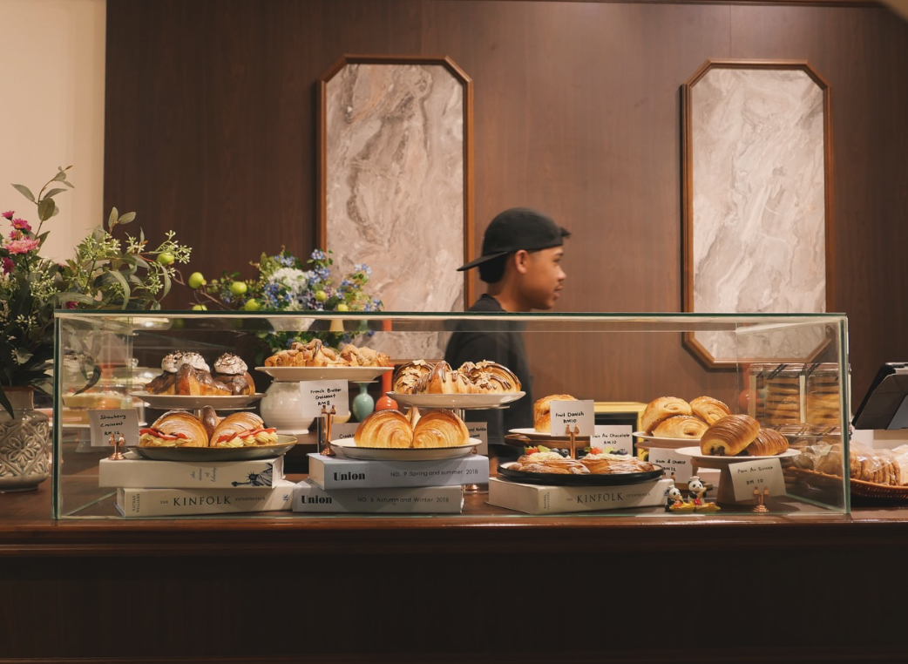

- Atas Cafe in Tanah Merah provides a great eating experience that combines refinement with a warm, community-centered atmosphere. Nestled in this calming setting, the cafe has become a favourite among locals and visitors alike, thanks to its great service, intelligently created food, and welcoming atmosphere.
- For Atas Café, a modern and stylish venue recognised for its gourmet offerings, collaborating with Foodpanda has provided an opportunity to expand its wonderful cuisine outside the cafe's walls. This teamwork guarantees that the cafe fulfils its customers' changing demands by providing a seamless, dependable, and high-quality delivery service.
Food & Beverage Service
Cozy Seating Arrangement

Aesthetic Decor
- The cafe's thoughtfully designed seating arrangement can accommodate a range of group sizes. Small two-seater tables, communal dining areas, and secret locations perfect for quiet times are all available to guests.
- Atas Cafe in Tanah Merah has a modern yet pleasant interior design. The decor is a perfect blend of earthy tones and luxurious materials including marble countertops, soft leather seating, and wood accents. This design produces a welcoming and beautiful atmosphere that appeals to a wide range of diners.
Food & Beverage Service
Reservation Service

Customized Orders
- Atas Cafe in Tanah Merah provides a streamlined reservation service that enhances the eating experience by ensuring ease and personal attention. Whether you're arranging a casual meetup, a romantic supper, or a special occasion, the reservation procedure is simple and customer-oriented.
- Atas Cafe in Tanah Merah provides a personalised eating experience by accepting customised orders, guaranteeing that every customer enjoys their meal just as they want. From dietary restrictions to custom dishes for special events, the cafe's adaptability and attention to detail make it a popular choice for personalised dining.